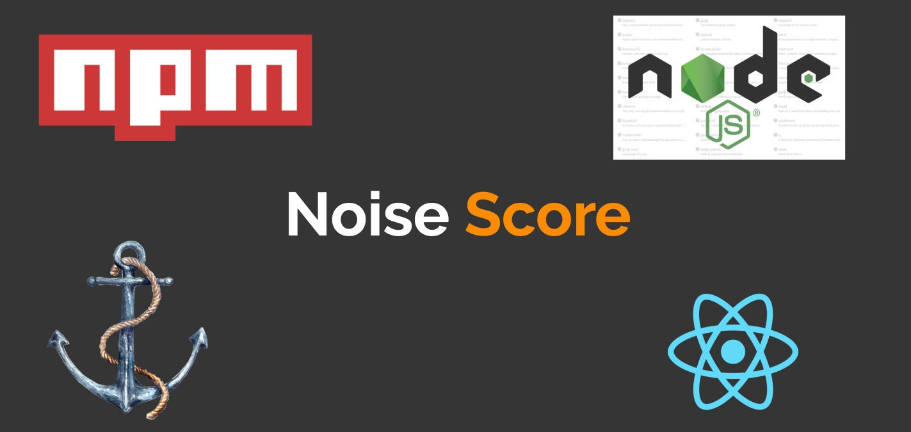
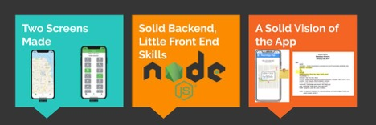
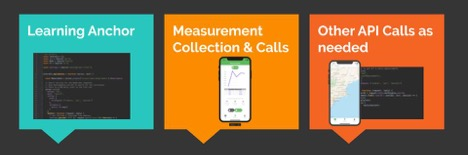
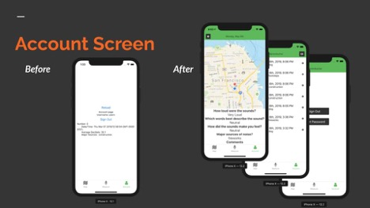

Noise Score
Noise Score – The Three W’s
Noise Score is a project that was proposed by Erica Walker (pictured above). She is a postdoctoral researcher at the school of public health at Boston University. She was founder of the company Noise and the City and was awarded a Robert Woods Foundation Grant for additional research into noise pollution. She’s used this to further her work, looking at community identified issues related to her sound and noise work. Her goal with the project is to get communities around Boston to user it and contribute to her research.
What I Started With
When I joined the project, I was given a running React Native app that had two screens, measure and map. I started with a good understanding of backend development, but I was very new to frontend work. I was given schemas for the databases and a general idea of what the app should look like.
What did I do – Backend
Although I was familiar with backend development. I was new to NodeJS. Furthermore, SAIL created an in-house backend service called Anchor. Anchor made it easy and hard to build out the backend. Although it had a lot of features built in (such as user authentication, tokens etc.) it was very complex and had little documentation. During the semester I was able to build out the backend and create the appropriate database collections and add the needed calls. Lots of the measurement calls were standard (i.e. input measurement, get all measurement etc.) but there were some calls that were unique to parts of the app (such as searching for a location on the map).
What did I do – Frontend
I got to learn a lot about React Native! It was a lot of fun to develop across two platforms, seeing your work seamlessly translate from iOS to Android really allowed me to develop more features in a faster amount of time. This also gave me experience in understanding how React Native treats different platforms. By the end I was able to build a lot of the app screens out and I learned a lot about how to style in an efficient manner. As an example (below) you can see that from where I started, I managed to not only make the screens look a lot cleaner, but I was able to identify when new screens needed to be made and linking them together.
At the end of my internship I was able to create 7 new screens from signup to logout. Learning this was a big part of my growth over the semester. Overall my time in SAIL was amazing and the project I was working on gave me invaluable experience that I will certainly use moving forward! If you want to keep up with the project you can view it on Ericas website here.